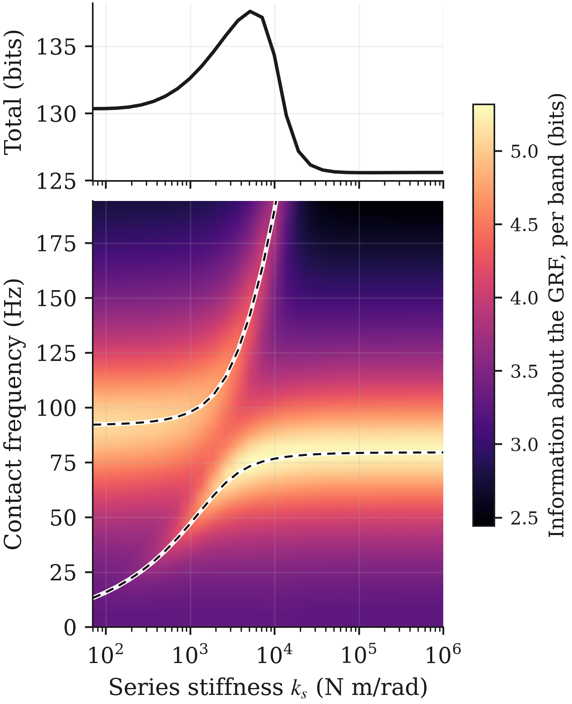
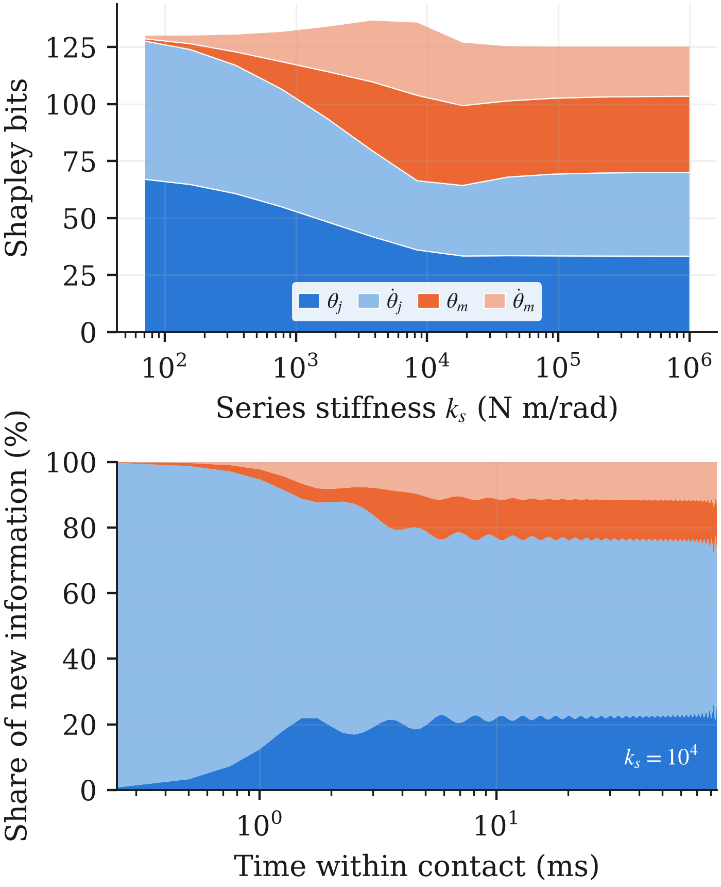
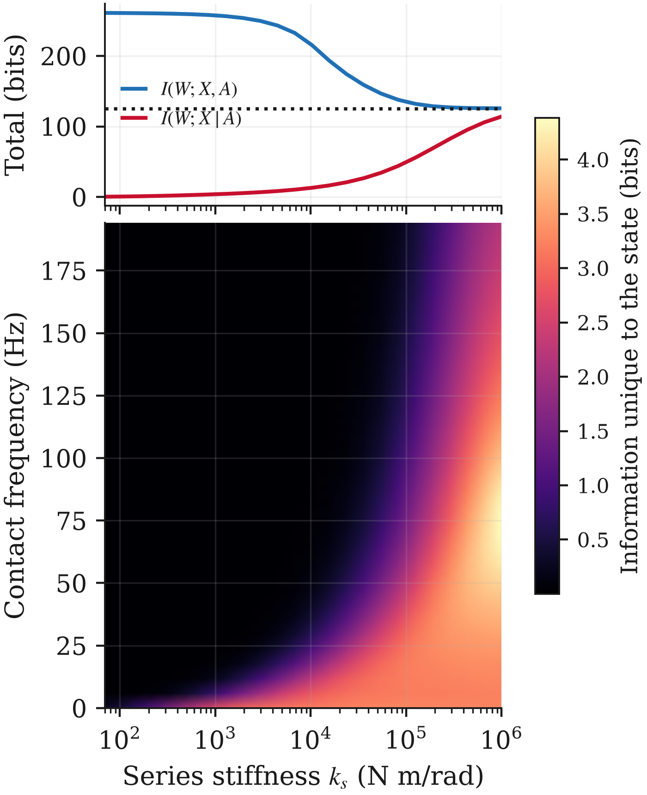
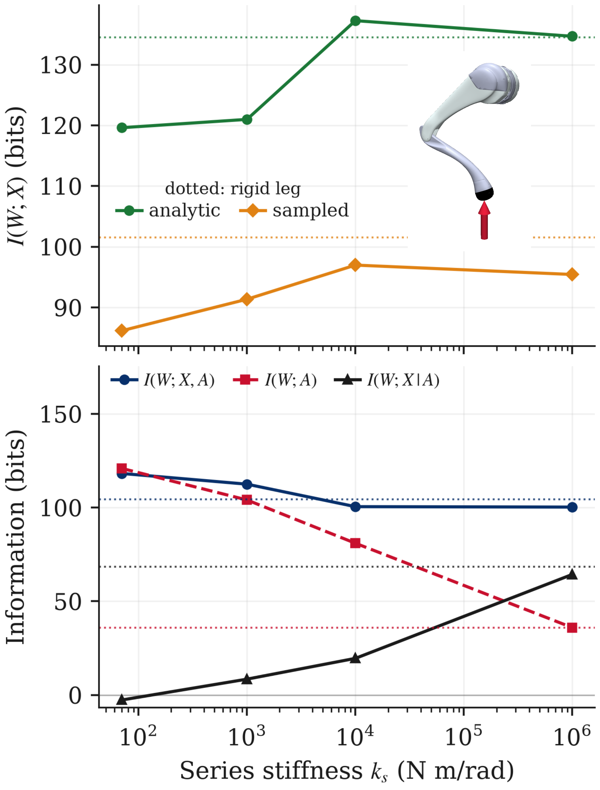
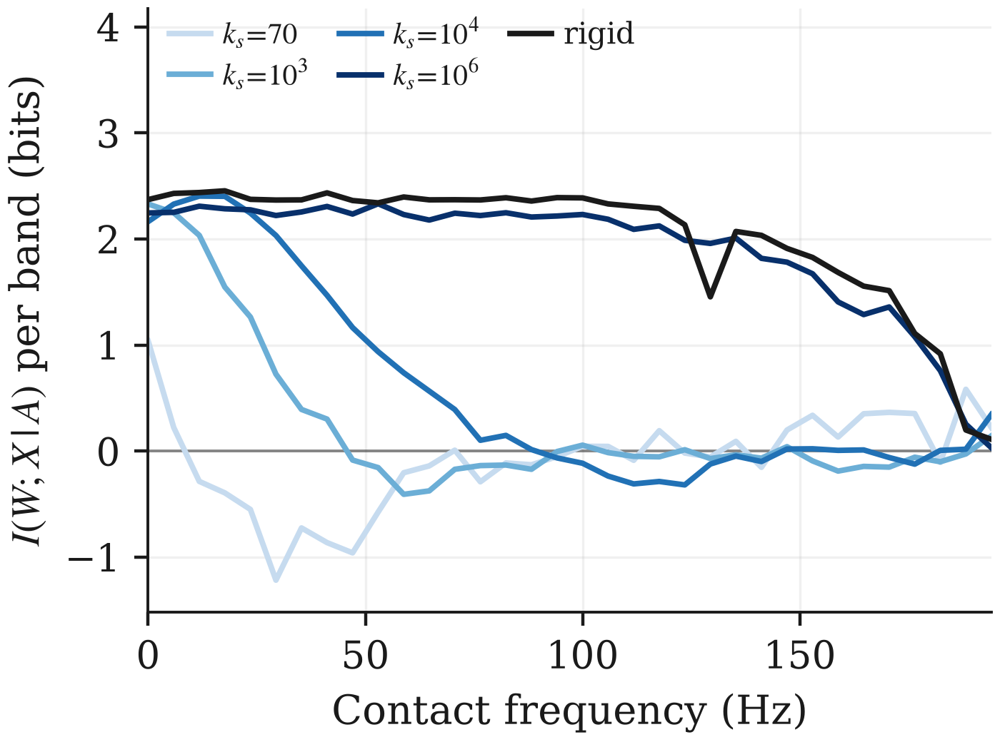
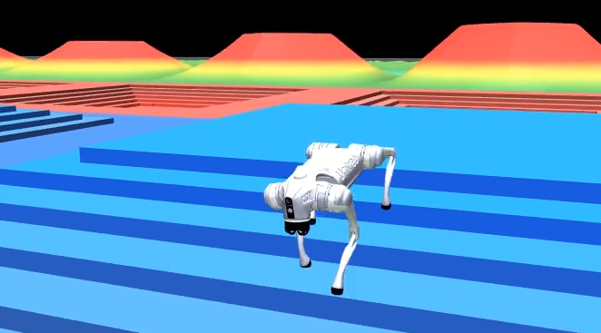

What is mechanical intelligence?
There is a common notion in robotics that physical bodies can remove some of the computational burden for complex motion planning problems. This concept, which is frequently referred to as mechanical intelligence, morphological computation, physical intelligence, mechano-computation, etc, is at the heart of the intellectual goals of the CyPhiLab. While there has been great success in developing systems that are believed to incorporate mechanical intelligence, there is relatively little work in formalizing a mathematical analysis that allows us to quantify and measure it. While there are several schools of thought on the most promising way to go on this topic, I currently consider information theory to be the most promising route. Luckily, Zahedi and Ay did some foundational work in 2013 that has laid the groundwork for application of information theoretic analysis to mechanical systems, and in this project we seek to extend these metrics and apply them to modern robot systems.
A case study: the MIT Cheetah/Unitree Go2 Quadrupeds
There is emerging recognition in our scientific community that this topic is of the utmost importance, but there is common recognition that we lack benchmark problems on the one hand and metrics on the other to make coherent progress in this area. Incidentally, this motivates my role on the Mechano-Computation for Expanding Scientific Horizons Network (MESH Network) Benchmarks and Competition Sub-Committee. As an initial step in this direction, I developed a new (ish) benchmark for analyzing mechanical intelligence, and I showed how it can be analyzed with a number of information theoretic metrics.
Specifically, I chose to look at the MIT Cheetah (and its descendents, the famous Unitree quadrupeds). Why? First, Sangbae Kim, who’s lab created the Cheetah, explicitly saw their work as producing engineering instantations of physical intelligence. You can see one of his wonderful talks on the subject here (incidentally, yours truly was the postdoc moderating this particular discussion). The core engineering insight underlying the MIT Cheetah work is that proprioceptive (low gear ratio) actuation allows high bandwidth open loop force control. Wensing et al. showed this with frequency-domain analysis of a linearized leg model, comparing the proprioceptive design against a series-elastic actuator (SEA). Our question was whether we could reach the same conclusions without any specialized analysis, using only general information-theoretic metrics, and then keep going to systems where linearization is no longer an option.
The body as a communication channel
The framing we adopt is that the body sits between the world and the brain. Before anything can be sensed or controlled, the body has to respond to the world, and some intelligent mechanical responses never involve a sensor at all. So our starting point is \(I(W;X)\), the mutual information between the world \(W\) (here, the ground reaction force) and the body’s state \(X\). Critically, this works for fully passive systems, which existing information-theoretic measures of morphological computation handle poorly. Once we add control, the quantity we care most about is \(I(W;X \mid A)\): the information the body carries about the world that the action \(A\) doesn’t already have. In plain terms, it measures how much of the job the body is doing on its own.
Two technical choices make this work. First, to compare states with different units and inertias (and different numbers of coordinates), we whiten the state by its energy, so every direction is measured in \(\sqrt{\mathrm{J}}\). Second, for linear models we get exact closed-form answers from the linear Gaussian channel; for nonlinear simulations we estimate mutual information with the contrastive InfoNCE estimator, trained on massively parallel rollouts in MuJoCo Warp.
Results
A passive leg: where do the bits live?
We start with the simplified one-leg model from Wensing et al., excite it with a random band-limited contact force, and sweep the series stiffness \(k_s\) from a very compliant SEA up to the rigid (proprioceptive) limit.
Bits pile up around the natural frequencies of the mechanical modes (dashed lines). The compliant SEA actually carries more total information than the rigid transmission, which fits the usual intuition that the extra compliant degree of freedom adds mechanical intelligence. The catch is that much of that information lives at the second mode, which is hard to put to use in practical control.
We can also ask which coordinates carry the information. Because the chain rule of mutual information depends on ordering, we use Shapley values to split credit fairly between the leg-side and motor-side coordinates. At low stiffness the leg-side coordinate carries a large share. As stiffness increases, the two coordinates lock together, become redundant, and split the credit evenly.


Adding control: who does the computation?
Next we close the loop. The proprioceptive leg uses open-loop force control, as in the Cheetah. The SEA uses the standard closed-loop approach, measuring force through spring deflection.

This is the main result. As stiffness increases toward the proprioceptive limit, the total information in state and action, \(I(W;X,A)\), drops, but the information unique to the body, \(I(W;X \mid A)\), rises. The stiffer designs do more of the force-control task with their bodies. The spectral breakdown also shows that this mechanical computation reaches higher frequencies as the transmission stiffens, which is exactly the high-bandwidth force control argument behind the proprioceptive actuator. We recover it here without any bandwidth analysis at all.
Beyond linearization: a simulated Go2 leg
To check that none of this is an artifact of the linear model, we repeat the experiments on a full nonlinear 3-DOF Unitree Go2 leg in MuJoCo, adding series-elastic joints for the SEA variants.


The InfoNCE estimates (a lower bound) agree qualitatively with the analytic results in the passive case. Under active force control, the conditional mutual information again increases toward the proprioceptive limit, and the stiffer transmissions again show more mechanical computation at high frequencies.
A full quadruped on rough terrain
Finally, as a proof of concept, we train reinforcement learning (PPO) velocity-tracking policies for several Go2 variants with different spring stiffnesses and rotor inertias, walking over varied terrain while being randomly shoved.

A few takeaways:
- Tracking performance degrades with larger rotor inertia, while series elasticity has a smaller effect (PPO is very good at finding workable controllers for diverse bodies).
- Performance roughly tracks \(I(w_{\mathrm{ext}};x_n \mid x_{<n},u_n)\), the body’s instantaneous processing of disturbances independent of control. The rigid design scores highest, and the high-inertia SEA scores lowest.
- Zahedi and Ay’s morphological computation metric, \(MC_W\), tends to rate the SEA designs as more morphologically intelligent than the proprioceptive design, and it doesn’t line up cleanly with performance. This points to a real tension between “the body’s causal influence on its own future” and “the body as a channel between the world and the controller”, and we plan to dig into it.
What’s next
This is a first step. We want to apply these metrics to many more kinds of mechanisms and robots, firm up the theory for using information theory on deterministic mechanical systems (the finite-resolution and energy-whitening assumptions raise some interesting questions, including connections to statistical mechanics), and run the full-robot RL study at scale across many seeds.
Publications
- Z. J. Patterson, “Quantifying Mechanical Intelligence in Legged Robots with Information Theory,” arXiv preprint arXiv:2609.19588, 2026. Link